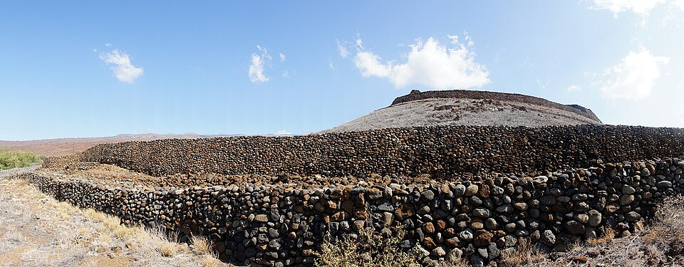

Puʻukoholā Heiau
Place: Puʻukoholā Heiau, Hawaiʻi Island
Type: Heiau / National Historic Site
Story it tells: A place where name, prophecy, labor, and power became tied to the unification of the Hawaiian Islands.

Puʻukoholā means “hill of the whale,” a name that may refer to the shape of the hill or whales seen offshore along the Kawaihae coast. On this site, Kamehameha I built a luakini heiau between 1790 and 1791, dedicated to the war god Kūkaʻilimoku.
According to tradition, a kahuna named Kapoukahi advised Kamehameha that constructing the heiau would help secure his rise to power. Thousands of people took part in the work, passing stones by hand from Pololū Valley to build the massive structure in less than a year.
After its completion, Kamehameha strengthened his control over Hawaiʻi Island and continued the campaign that eventually unified the islands under his rule. Puʻukoholā remains one of the most powerful physical reminders of that turning point.
Today, the site is preserved as Puʻukoholā Heiau National Historic Site. Visitors can view the heiau from designated areas, but entry onto the structure itself is not allowed out of respect for the site.